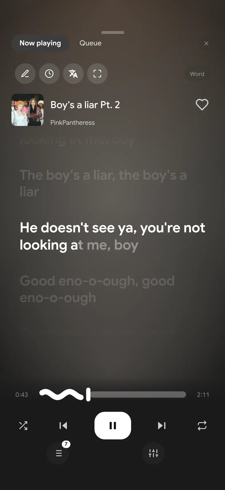
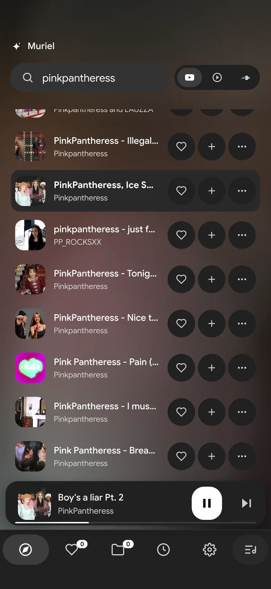
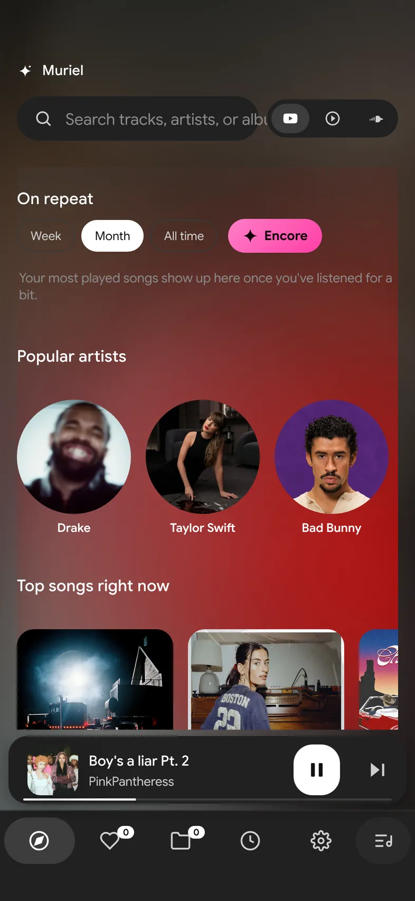

Dusk
Music for after the light.
A free iPhone player. YouTube, YouTube Music and SoundCloud — no ads, no account.
The cover owns the night.
Full-screen artwork, a quiet transport, lyrics and queue when you want them — nothing else competing for attention.

Search without picking a source.
Type a song. Dusk chooses YouTube Music, YouTube or SoundCloud for you and keeps the chrome out of the way.

Home that starts with a song.
Recommendations, mixes and what you played last — led by cover art, not a dashboard of cards.

Sideload it.
Dusk ships as an unsigned IPA from GitHub Actions. On Windows, Sideloadly is the simple path.
- 1Build — open Actions → Dusk iPhone test build → Run workflow, then download the Dusk-iPhone artifact.
- 2Install — open the IPA in Sideloadly with your Apple ID and a USB-connected iPhone.
- 3Trust — on the phone: Settings → General → VPN & Device Management → trust the developer.